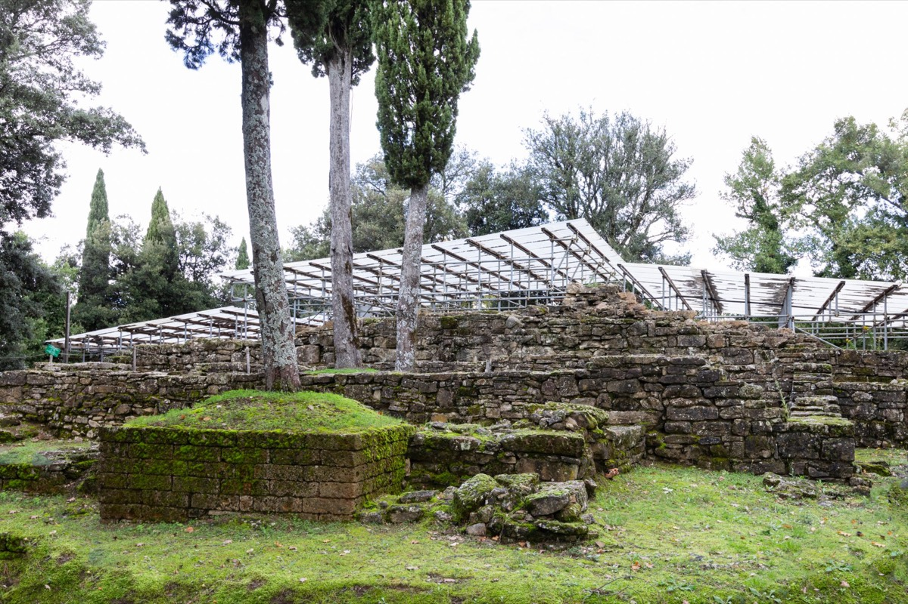

Percorso 1 · Storico
Le origini del Mugello
Dai ritrovamenti neolitici alle tracce di Celti ed Etruschi
A PiediIn BiciCon il Tuo Cane
A Piedi
- Durata
- 3 giorni
- Lunghezza
- 49 Km
- Difficoltà
- Media
- Dislivello
- 1908 Mt
MTB/EBIKE
- Durata
- 1 giorno
- Lunghezza
- 48 Km
- Difficoltà
- Impegnativo
- Dislivello
- 1728 Mt
Traccia (48,7 km)Variante MTB (47,4 km)PartenzaArrivo
Porta il percorso con te
Scarica la traccia per il navigatore o per un'app come Komoot, OsmAnd o Wikiloc.
Traccia GPX MTBTraccia GPXScheda completa su Orme del Mugello
Sentieri e cammini attraversati
- Sentieri CAI
- nr. 1A - nr. 15 - nr. 11 B - nr. 10 - nr. 11 - nr 11A
- Cammini
- Cammino di Dante - SOFT 4 - SOFT 5 - SOFT 6 - Via degli Dei
Descrizione del percorso
Leggi il racconto di Orme del Mugello
Il percorso inizia da Frascole, nei pressi di Dicomano, che da è considerarsi uno dei luoghi più significativi per la comprensione della presenza etrusca nel Mugello. Qui si trova un sito archeologico che ha restituito reperti di grande interesse, tra cui resti di abitazioni, utensili e stele, segno di un insediamento etrusco ben strutturato. La posizione sopraelevata offre una vista panoramica sul territorio, che anticamente permetteva agli abitanti di tenere sotto controllo la vallata e garantire una difesa naturale. Si giunge al centro abitato di Dicomano, il comune più orientale di tutto il comprensorio del Mugello. Qui non solo è possibile gustare i sapori culinari della tradizione, ma è possibile visitare il Museo Archeologico, punto di riferimento per chiunque desideri approfondire la storia antica del Mugello. Fondato per valorizzare e proteggere i reperti trovati negli scavi locali, il museo espone una collezione di oggetti che coprono un ampio arco temporale, dalle epoche preistoriche fino alla romanizzazione del territorio. Lungo la Via di Dante si sale verso la vetta del Monte Giovi. Poco prima dell’arrivo in vetta è possibile fermarsi per riprendersi dalla fatica presso la Fonte alla Capra. Altri siti interessanti che meritano di essere citati sono la Piramide dei Partigiani e Casa al Cerro, luoghi che sottolineano lo stretto legame tra queste terre e le attività partigiane durante il periodo storico della Resistenza. La versione del percorso dedicata ai Mountain Biker, non raggiunge la vetta di Monte Giovi in quanto la successiva discesa sarebbe troppo impegnativa e tecnica: dalla Piramide dei Partigiani porta direttamente alla Fonte alla Capra. Da Monte Giovi (992 m.) è possibile godere di una vista mozzafiato sul Mugello e l’Appennino, essendo la vetta stessa spartiacque tra il Mugello e la Val di Sieve. Monte Giovi, una delle montagne più alte del Mugello, è noto per la presenza di importanti ritrovamenti celtici. Questo luogo affascinante, circondato da una natura selvaggia e incontaminata, ospita delle stele, ovvero colonne scolpite che rappresentano antichi simboli e pratiche religiose delle popolazioni celtiche e etrusche. Si attraversa Barbiana (470m) è una piccola località situata nel comune di Vicchio. Negli anni '50 e '60 divenne famosa grazie a Don Lorenzo Milani, un prete ed educatore, che qui fondò una scuola sperimentale dedicata ai ragazzi di estrazione popolare e contadina. La scuola di Barbiana non era una scuola tradizionale: si basava su un approccio educativo radicale e inclusivo, dove si insegnavano non solo le materie classiche, ma anche valori di uguaglianza, giustizia sociale, e responsabilità collettiva. L'obiettivo di Milani era dare una voce e una dignità a giovani che altrimenti sarebbero rimasti ai margini della società, senza opportunità di riscatto. Visitabile il piccolo cimitero dove riposano le spoglie di Don Milani. Si arriva dunque a Ponte a Vicchio.
Qui è possibile concedersi una sosta prima di riprendere il proprio percorso. Si segue la recente pista ecoturistica Sieve, che costeggia appunto il fiume omonimo. Il sentiero è piacevole e ricco di punti dove poter contemplare la campagna mugellana con i suoi campi coltivati. Si attraversa il Ponte di Annibale, un affascinante ponte medievale. Realizzato in pietra, presenta un'unica arcata slanciata, tipica delle strutture dell'epoca. Nonostante il nome suggestivo, che richiama il celebre condottiero cartaginese, non vi sono evidenze storiche di un legame diretto.
Si giunge a Borgo San Lorenzo (180 m), il centro più popoloso della zona del Mugello che vanta una ricca storia medievale. E’ famoso per la Pieve di San Lorenzo, una chiesa romanica risalente all'XI secolo, e per l'artigianato tradizionale, come la ceramica e la lavorazione del ferro. Dal borgo con le sue strade e le sue piazze, una tra tutte Piazza Dante, la piazza più grande del paese, alle campagne: le colline coltivate, i campi ordinati, i filari di alberi rappresentano la fatica e la creatività umana, ma anche un simbolo di armonia tra uomo e natura. dalla chiesa di San Michele a Figliano si arriva a Scarperia (290 m), un’autentica perla del Mugello. Scarperia è un suggestivo borgo medievale fondato nel 1306 dalla Repubblica Fiorentina come avamposto di difesa e controllo sulla Via Bolognese, è oggi famoso per la sua storia, il suo artigianato e i paesaggi circostanti. Il paese è rinomato per la tradizione dei coltelli e dei ferri taglienti, che risale al Medioevo. Il museo, situato all'interno del Palazzo dei Vicari, espone coltelli, forbici, e strumenti artigianali di ogni epoca, celebrando una tradizione che continua ancora oggi con le botteghe locali.
Tra gli eventi da segnalare non può certamente mancare il 9 settembre, dove si celebra il "Diotto", una festa tradizionale che rievoca la fondazione del borgo, con cortei storici, giochi medievali e spettacoli che richiamano le usanze antiche. Si giunge alla chiesa di San Gavino al Cornocchio. Risalente al periodo medievale, è dedicata a San Gavino, un martire venerato in diverse tradizioni cristiane. La chiesa conserva un'atmosfera semplice e raccolta, tipica delle pievi rurali toscane, e si inserisce armoniosamente nel paesaggio collinare circostante. È un luogo di culto legato alla comunità locale e alla memoria storica della zona. Dopo tanti scorci di campagna si arriva a Sant’Agata (340 m), un piccolo borgo conosciuto per il suo fascino storico, i paesaggi idilliaci e la sua atmosfera autentica, Sant'Agata è una meta perfetta per chi desidera esplorare la Toscana più genuina, fatta di tradizioni secolari, architettura antica e paesaggi incantevoli. Le origini del borgo di Sant'Agata risalgono all'epoca medievale, con tracce di insediamenti ancora più antichi, tanto che il territorio è stato oggetto di numerosi scavi archeologici che hanno rivelato reperti risalenti a epoche preistoriche, etrusche e romane. Questa lunga storia ha contribuito a modellare l'identità del borgo, che conserva tuttora importanti testimonianze del passato. Nel Medioevo, il borgo e i suoi dintorni erano sotto l'influenza di famiglie nobili, come i conti Guidi e i Medici, che hanno lasciato un’impronta significativa sull’architettura e le tradizioni locali. Non resta dunque che fermarsi e scoprire lentamente la storia e le tradizioni che rendono questo luogo speciale.
Scarperia e l’arte delle lame
Nel Medioevo, i coltellinai di Scarperia erano organizzati in una corporazione con regole precise che garantivano la qualità dei prodotti. Scarperia è celebre per i suoi coltelli pieghevoli, spesso decorati con intarsi e materiali pregiati come corno e legno. Ogni coltello veniva realizzato a mano, con una divisione dei compiti tra fabbro (che forgiava la lama), maniscalco (che lavorava il manico) e montatore (che assemblava il tutto). Ancora oggi, alcune botteghe artigiane producono coltelli personalizzati, perpetuando una tradizione che unisce funzionalità ed eleganza.
Dormire, mangiare e prodotti lungo il percorso
Strutture ricettive (75)
- Affittacamere Al Mulino contatti
- Agriturismo Borgo Macereto contatti
- Agriturismo La Matteraia contatti
- Agriturismo Le Pozze contatti
- Agriturismo Poggio Bartoli contatti
- Alla Corte Di Carla contatti
- Area Di Sosta Vecchio Ponte contatti
- BeB AURA contatti
- BeB CIRCUIT contatti
- BeB IL PITTORE contatti
- BeB IL PODERE DELLA PIAZZA contatti
- BeB KINGA contatti
- BeB LA CASA FUORI PORTA contatti
- BeB LE DUE VOLPI contatti
- Casa Torta contatti
- Casale San Giorgio contatti
- Castello Del Monsignore contatti
- Fattoria I Ricci contatti
- Fattoria La Topaia contatti
- Fattoria Le Case contatti
- Frascole contatti
- Hotel Ebe contatti
- Hotel La Rosa contatti
- Hotel Marrani contatti
- I Castagni Dei Medici contatti
- I Giardini Di Marcello contatti
- I Suoni Del Bosco contatti
- Il Borghetto contatti
- Il Borgo Di Elisa contatti
- IL BORGO DI VILLA CELLAIA - widespread hotel contatti
- Il Fangaccio contatti
- Il Gallo Birichino contatti
- IL MUGELLO BeB contatti
- Il Muretto contatti
- Il Pino Del Capitano contatti
- Il Podere Di Tullio contatti
- Il Poggio Alle Ville contatti
- Il Villino contatti
- La Casa Di Colle contatti
- La Casetta Di Ginevra contatti
- La Colombaia contatti
- La Corte Di Ronzano contatti
- La Fattoria Del Farneto contatti
- La Spiga contatti
- La Stazione Di Monta contatti
- Locanda Degli Artisti contatti
- Locanda Di Alberi contatti
- MONSIGNOR DELLA CASA COUNTRY RESORT eSPA contatti
- Mugello Hostel contatti
- Mugello Vacanze contatti
- My Home contatti
- Podere Capitignano contatti
- Podere La Carbonaia contatti
- Podere Moiata-Fattoria Di Campestri contatti
- Podere Ugolini contatti
- Poggio A Sieve contatti
- Poggio Savelli contatti
- Residences E Appartamenti- Villa Torricelli Il Giardinetto contatti
- Residenza Di Campagna Montelleri contatti
- Rupecanina contatti
- Short Term Rental In Borgo San Lorenzo contatti
- Short Term Rental In Dicomano contatti
- Short Term Rental In Scarperia E San Piero contatti
- Short Term Rental In Vicchio contatti
- Sommavilla contatti
- Tertulia coliving contatti
- Tre Fiumi contatti
- Villa Campestri contatti
- Villa Cerreto contatti
- Villa Dalia contatti
- Villa Di Pilarciano contatti
- Villa La Commenda Concordia contatti
- Villa Le Case contatti
- Villa Maltempo contatti
- Villino Le Vigne contatti
Aziende (15)
- Azienda Agricola Palazzo Vecchio contatti
- Azienda Agricola Poggio dei Roti contatti
- Bacco del Monte di Elena Bartalucci contatti
- Banco Fiorentino - Filiale di Borgo San Lorenzo
- Banco Fiorentino - Filiale di Luco di Mugello
- Banco Fiorentino - Filiale di Scarperia
- Banco Fiorentino - Filiale di Vicchio
- Borgo Macereto contatti
- Farming
- Frascole soc.agr. di Lippi E. Santoni C. e E. s.s. contatti
- Il Poggio alle ville di Raffaele Edlmann contatti
- Monsignor della Casa Country Resort e Spa
- Poggio a Sieve - Casa Vacanze
- Società agricola Il Ponte di Trotta Rocco e Lompi Stefania s.s. contatti
- Tenuta Matteraia contatti
Il nome della struttura porta al suo sito web; "contatti" apre la scheda con telefono e mail sul portale turistico Mugello Toscana (per chi non ha un sito c'è solo quella). Le aziende portano ai loro siti. Sono tutte segnate anche sulla mappa.
Percorso, traccia e testi di Orme del Mugello, pubblicati con il loro permesso.